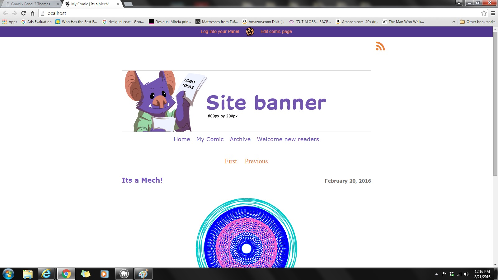

Installing Grawlix was easy enough, easier than installing WordPress in my opinion. I did have to switch to an older version of PHP, as it doesn't work with 7, so that's something to watch out for. There was one other technical bug, but it was quite easy to fix. (Click on the images for larger versions)
Themes for Grawlix work similarly to WordPress -- there isn't a click and drag interface, and they would need to be coded from PHP, HTML and CSS. Easiest way to do this would be to start from one of the base themes, and customize it from there. Stick Figure is actually designed for this.
This is the first page you see after getting it set up and logging in.
Editing basic comic info.
Adding a new comic. There is a 2MB file size limit for the image, so that's something to watch out for. You can add a blog post at the bottom, but there aren't options like bolding words and so on.
Adding a new static page. There are a lot of generic format options, and we can make out own as well through the freeform option.

Selecting what pages appears on the menu.
The comic with a few pages added. One has a chapter assigned to it, the other doesn't.
Archive settings.
This is the default theme.
Default theme with the Whiteout CSS package.
Stick Figure theme with the Blank CSS package.
Stick Figure theme with the Moody CSS package.
Stick Figure theme with the Natural CSS package.